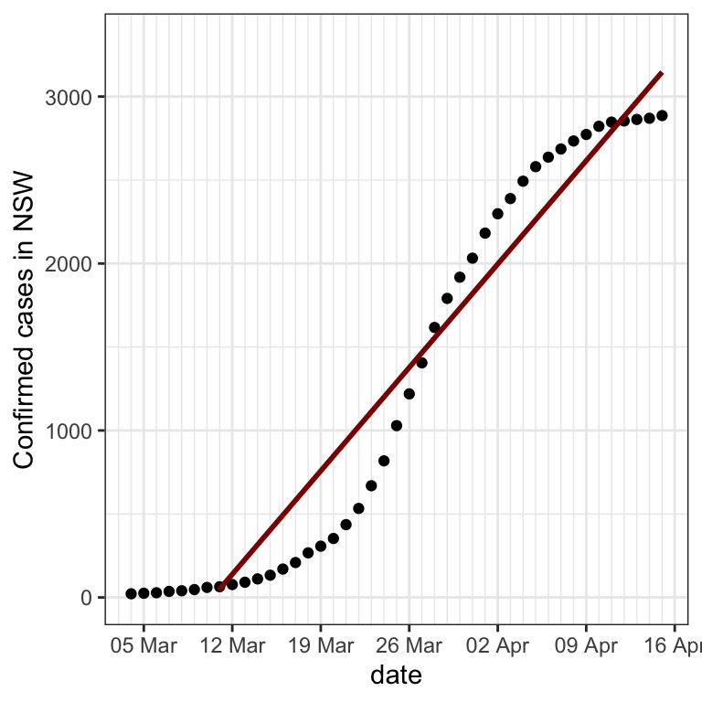

The following plot shows the number of confirmed cases of COVID-19 infection on each day in the state of New South Wales in Australia since 4 March.

Below, light blue dots have been added to the plot.

If the number of cases had increased by 20% each day, then the black dots (the real data) would fall exactly on top of the blue dots. In other words, the blue dots show the number of cases that would have occurred if there had been a 20% increase in cases each day. The raw numerical (not percentage) change in cases is greater for each day. This is because 20% of a larger number is greater than that of a smaller number. As a result, the graph becomes steeper and steeper as the number of cases grows.
When the number of cases does grow by the same percentage each day, it is called “exponential growth”. It is what would occur if a person who is infected infects more than one other person on average. For 20% daily growth, on average each person would have to infect 1.2 others.
Exponential growth
“Exponential growth” refers to when something increases by the same percentage on each day. Below, the data have been replotted with the vertical axis percent increase compared to the previous day rather than total number of cases.

The blue dots now form a horizontal line, because they were created by calculating a 20% increase compared to the previous day. This graph makes it obvious that after 23 March especially, there was not a constant percentage increase each day. Instead, the percentage increase became less and less.
The below plot shows, for each day, the percentage increase in confirmed cases from the previous day.

Semi-log plot
Constant slope means
A popular and complicated plot

What may be slightly confusing in this plot is that the labels on the vertical axis are not equally spaced, in order to position them at round numbers.

Next
A common mistake people make is to assume there is only one reason for
Reactions